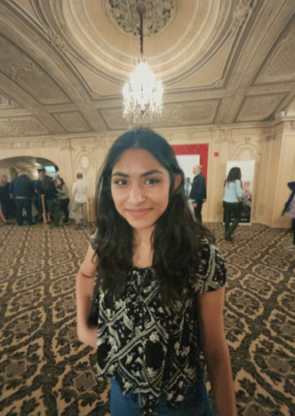

I’m a second-year Computer Science student at Northeastern University, with a growing interest in artificial intelligence and machine learning. Some of my favorite classes so far have been Math of Data Models, Statistics, and Machine Learning, where I’ve enjoyed exploring how data and algorithms can be used to solve real-world problems. Beyond the classroom, I’m passionate about creating—whether that’s building coding projects or making art. I love the process of bringing ideas to life and learning something new along the way. On campus, I’m actively involved in Northeastern’s community. I currently serve as the treasurer for both the university’s literary magazine and Women in Technology, where I help manage logistics and plan large-scale events. I find a lot of joy in seeing these events come together and creating spaces where people can connect and collaborate. I’m always looking for opportunities to apply my skills to meaningful projects and work with others who are just as curious and driven. Thanks for stopping by! 
Contant information: narang.an@northeastern.edu